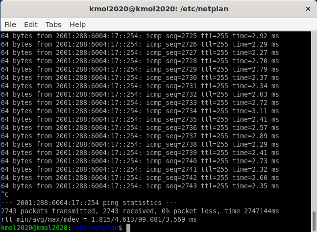
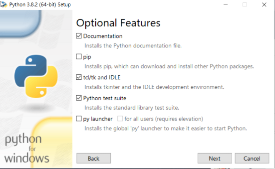
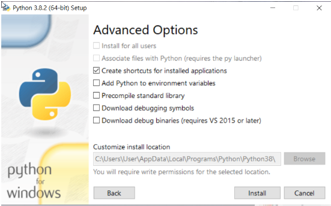
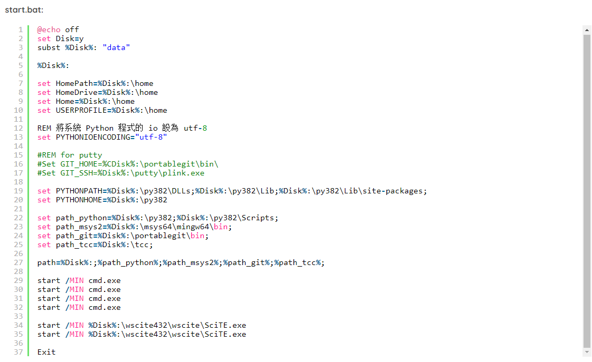
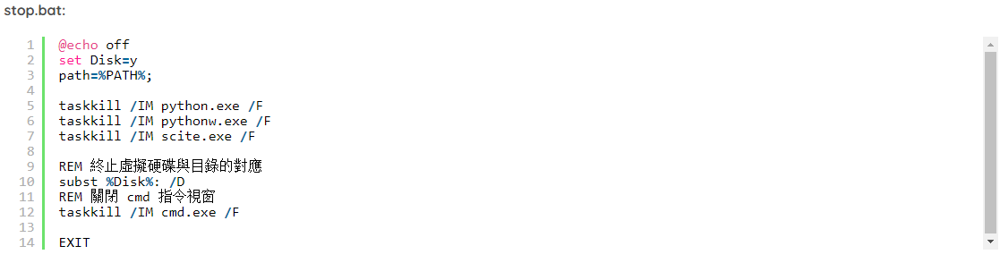
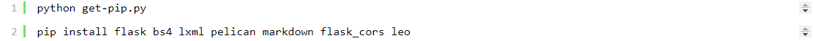

WEEK <<
Previous Next >> WEEK6-10
WEEK1-5
week2
建立自己倉儲
將2019fall可攜式套件載入自己隨身碟裡
git clone倉儲網址
git submodule add https://github.com/mdecourse/cmsimde cmsimde
建立 cmsimde 目錄, 並從 github 取下子模組內容.
近端維護時, 更換目錄到倉儲中的 cmsimde, 以 python wsgi.py 啟動近端網際伺服器.
動態內容編輯完成後, 以 generate_pages 轉為靜態內容, 以 git add git commit git push 將內容推到遠端.
week3
直播並分組完成
更新python3.8.2
到 https://www.python.org/downloads/release/python-382/https://www.python.org/downloads/release/python-382/ 下載 Windows x86-64 executable installer，載完後執行python-3.8.2-amd64.exe
選modify
取消pip，選next
點選 Install 來安裝




8.下載MSYS2 msys2-x86_64-20190524.exe 至data下。
9.下載PortableGit 64-bit Git for Windows Portable 至 portablegit下。
10.安裝pip，到https://bootstrap.pypa.io/get-pip.py頁面，另存新檔到data下。
11.執行指令，將python3.8.2版本缺少的模組下載下來。

參考網站
http://mde.tw/cd2020/content/KMOL2020.html
http://mde.tw/cp2019/content/Mac%20Notebook.html
第三周抽點任務回報
WEEK <<
Previous Next >> WEEK6-10